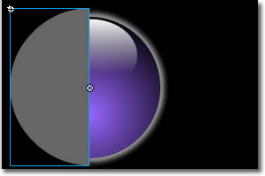

This tutorials will tell you how to make a circular animation like this for yourself.
First of all you may want to download the source files, incase you require reference. Download the files by clickinghere. The Png files are for one the glowing sphere and the other half of the glow of a black circle with same radius as the sphere. We used 178 X 178 pixels for dimensions.
Note that you can create these images even in Flash. Follow the instructions for 'Glowing Sphere 1' in the Fireworks section to make the 3D sphere in Flash. But creating the outer glow would be difficult if you are not using Flash 8. You can easily apply a glow to a movie clip using Flash 8. To create the glow in older versions of flash you would have to convert half a circle (with fill color set to none, line color to some grey) to a fill 'Modify -> Shape -> Convert Lines To Fills' and then select that fill and press 'Modify -> Shape -> Soften Fill Edges' and create an outer glow in that way.
Import the two images into Flash and convert them into Graphics. To do this either click an image and press 'F8' or press ' Modify -> Convert to Symbol'. Create a new Movie Clip by 'Insert -> New Symbol' and paste the glow_half graphic onto the scene. In the properties manager, give X and Y co-ordinates as 0. Copy that image and paste it in place 'Ctrl + Shift +W' or 'Edit -> Paste In Place'. With the pasted graphic selected, rotate it 180 degrees 'Ctrl + Shift + S' or 'Modify -> Transform -> Scale And transform'. Put scale as 100% and rotation as 180. Now select this graphic and put X = 89, Y = 0 in the Properties Manager. You should get something like this.
This frame would be the lowermost frame and the outer glow will show as a border.
Now lets create the Circular animation for the half rotation. Create a new layer and paste the Glowing sphere here, put its X and Y co-ordinates to 0. This layer will be masked by a semicircle. Create another layer and draw a circle with any fill color and no border color. Select it and give it the dimensions 178 X 178 and X and Y co-ordinates as 0. Now using the Selection Tool(V) select almost half of this image and press Delete. The finished semicircle should be 89 pixels Wide and 178 pixels High. You may have to work on this until you get it to these dimensions.

Once you get it as shown above, select it and convert it into a Graphic. We named it 'Rotator'. Select Frame 25 in this Layer and create a keyframe, 'F6' or 'Insert -> Timeline -> Keyframe'. Select the Rotator and rotate it 90 degrees. Select Frame 50 and create another keyframe. Rotate the Rotator a further 90 degrees on this frame.
Right click on any frame between 1 and 25 and select 'Create Motion Tween'. Apply this to the frames between 25 and 50 in this way also. Now right click the name of this layer and click 'Mask' to make this layer mask the underlying layer, which contains the glowing sphere. The timeline should look like this.
Now there is a problem if you Test the movie, half of the sphere always shows. So Select the glow graphic on the left in the lowermost layer, copy it create a new layer above the masker_50 layer and 'Paste in Place'. Now the left portion of the animation is hidden and we are half way through our task. Now copy and paste the 'glowing_sphere' graphic from the 2nd layer and ' Paste it in Place' in the hide_half layer on the 50the frame. Now right click on it and select 'Arrange -> Send to Back'. This would show right-half of the glowing sphere grahic and just the glow on the left half side.
Now create two more layers above this layer Select the 50th frames and insert Keyframes. Copy up the 'glowing_sphere' graphic and paste it in place into the layer above 'hide_half' layer.
Repeat the process of creating the circular mask on the left half of the 'glowing_sphere' graphic. Mask it and in the end, the timeline should look like this.
We used a movie clip because it enables us to position the animation however we like and copy and use it in another file or something. Now come back to Scene 1. Since we created the animation for 100 frames, drag the movie clip animation on to the scene from the library if it s not already there. Now press 'Ctrl + Enter' or 'Control -> Test Movie' to play the movie.